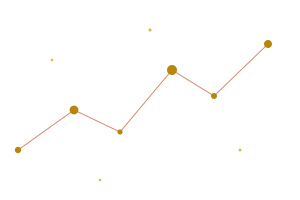
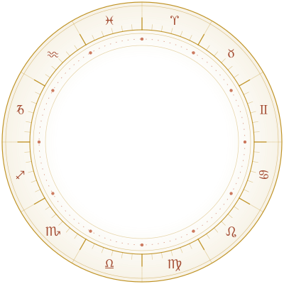

First Light
One question, answered well
₹2,100
- 30-minute focused call
- One life area
- Recording & notes

Jyotish · Since 2007
Welcome to Nakshatra. I read your birth chart the way a gardener reads soil — patiently, honestly, without flattery. What the planets incline, you still decide.

Eight ways I can help
A full janma-kundali session — the map you were born under, read line by line, for the life you are actually living. The reading everything else builds on.
Compatibility, guna-milan and the windows when commitment is best supported.
Dasha-led timing for a switch, a launch, or the courage to wait.
Choosing the right moment to begin: weddings, housewarmings, a new venture, a first flight.
Grounded, non-fearful upaya — mantra, gemstone and charity matched to your chart.
Naming, temperament and study inclinations for the little ones you love.
Your solar-return year mapped month by month, so nothing arrives unannounced.
Private counsel for founders and teams — decision timing, partnership fit, and the temperament of a launch window.
The person behind the chart
I grew up in Varanasi watching my grandmother trace planets in the margins of an almanac. When my father fell ill and every doctor shrugged, she opened his chart, named the month things would turn — and they did. I spent the next eighteen years trying to earn that same steadiness.
Today I read charts full-time from Ludhiana, for seekers in forty countries. I will never tell you the future is fixed. I will tell you the weather — and help you pack.
— Nakshatra
Private video sessions, worldwide. Your chart is prepared before we ever meet.
Reserve your slotNothing hidden
Most people hesitate to book an astrologer for two reasons: they don’t know what will happen in the room, and they’re afraid of a surprise bill. So here is both, in the open.
Date, exact time and place. I cast and study your chart before we meet — no live guesswork.
A calm video call. You bring the real questions; I bring the chart and plain answers.
Recording, written notes, timing windows and — only if useful — a short list of remedies.
One question, answered well
₹2,100
The complete birth-chart reading
₹5,400
Retainer for founders & families
₹18,000
From the studio
In their words
“He told me to wait four months before quitting. I did. The offer that came in month five is the job I have now. Nakshatra doesn’t sell hope — it sells timing.”
Ananya R.Product lead · Bengaluru
“No fear, no upselling. Just a calm hour that made a hard year make sense.”
David M.London
“Our wedding date came from him. Both families finally agreed on something.”
Meera & RohitToronto
“I’ve seen a dozen astrologers. He’s the only one who admitted what the chart couldn’t say.”
Fatima A.Dubai
Your chart is already waiting
Tell me your birth date, time and place. I’ll prepare your chart and send two or three times that suit both of us — usually within a day.